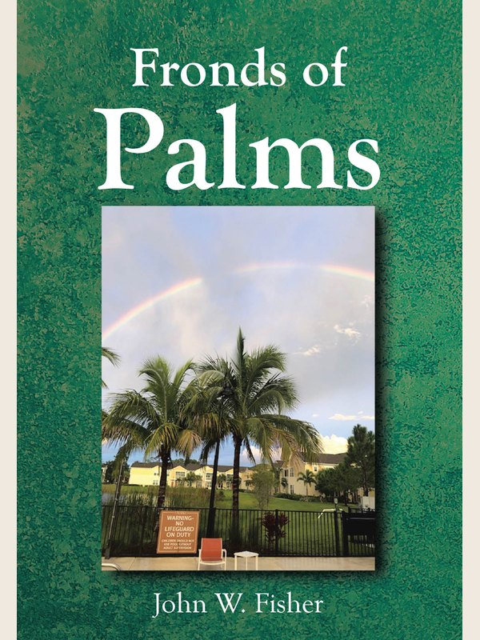
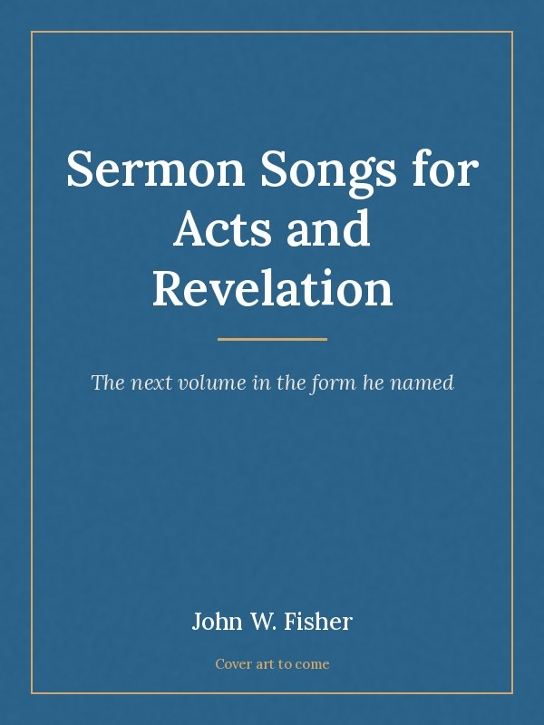
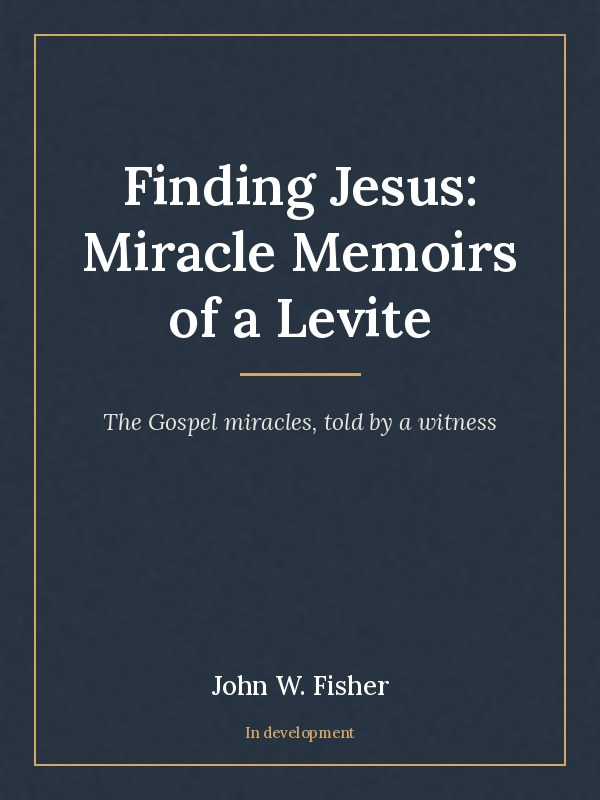
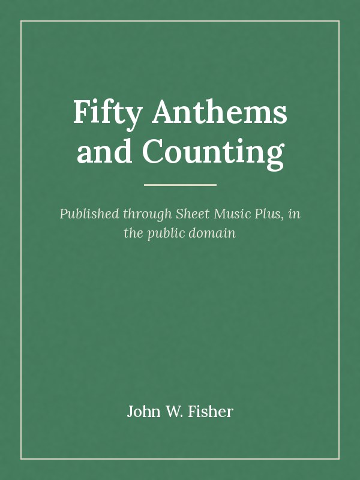

50+
Anthems published
John Fisher spent his working life explaining things to people.
First science, to elementary and middle school children in Pennsylvania. Then real
estate law and practice, to grown adults sitting for a licence exam. He held the
front of a room at the Temple University Real Estate Institute from 2000 to 2016.
In 2016 he founded John W. Fisher Creative Enterprises and started writing in
earnest. What came out was music: more than fifty anthems, and a form he named
and trademarked, the Sermon Song, which sets a Gospel passage so a congregation
can sing what it has just heard preached. Then poetry, then a colonial Christmas
story, then a book for anyone studying for the Pennsylvania real estate exam.
He has been married fifty-six years. Since 2020 he has been his wife’s
caregiver, and he writes around it. Both his children became teachers. Four
grandchildren are working their way through school and university.
His own form, trademarked. A Gospel passage set to music so a congregation can sing the reading it has just heard.
Fronds of Palms gathers thirty-two poems, each facing a photograph he took himself.
Certified to teach elementary and middle school, and licensed to teach real estate. Broker’s licence in Pennsylvania and Florida.
The songs get performed. Healthpark Senior Living and nursing homes around Fort Myers.
More than fifty anthems published through Sheet Music Plus, all in the public domain so any choir can take them and sing.
A trademarked form of his own. Mark is finished and in print. Acts and Revelation is scheduled for 2026.
Poems paired with his own photographs, a colonial Christmas story set at Valley Forge, and children’s pieces in Humpty Dumpty Children’s Digest.
Sixteen years at the Temple University Real Estate Institute, plus an exam prep book for Pennsylvania candidates.
Anthems published
Books written
Years married
Bachelor of Arts in psychology, cum laude. President of the psychological honor society, holder of the McKelvy Scholarship, and given an honorary award by the Phi Beta Kappa Society the same year.
Master of Education, followed by more than thirty further graduate credits and a supervisory certificate.
Elementary and middle school, and summers on the Science in the Summer programme run by GlaxoSmithKline in Philadelphia. Columbia University gave him a book award for what he achieved in education.
Awarded by Founding Forward.
Sixteen years teaching people to pass a licence exam, with a broker’s licence in two states, a mortgage certification and a green practices certification behind it.
Founded with three divisions: music composition, prose writing, and the Sermon Song.
Caring for his wife full time. The books have kept coming anyway.
Five in print, one due next year, one still being written.

In printPoetry · Christian Faith Publishing
Thirty-two poems, each one facing a photograph he took himself. Wholesome, thought provoking, and funny in places. He names Walt Whitman as the reason he started, and notes that Leaves of Grass began at twelve poems.
 In print
In print
Choral · Sermon Song
The Gospel of Mark set so a congregation can sing the passage it has just heard preached. The first full book in the form he named and trademarked.

Due 2026Choral · Sermon Song
The next volume, carrying the form through the Acts of the Apostles and the Book of Revelation.
Story · Christmas
A colonial Christmas story set at Valley Forge, drawing on the Pennsylvania he taught in for most of his life.
Reference · Real estate
Sixteen years of teaching the licence exam, written down. For candidates sitting the Pennsylvania test.

In developmentProse · In development
The miracles of the Gospels told from the point of view of a Levite who was there. Still being written.

Public domainChoral · Sheet Music Plus
More than fifty published anthems, released into the public domain so any choir anywhere can pick them up and sing them without asking.
Selected for inclusion in recognition of his work across the arts, real estate and education.
Awarded by Founding Forward.
Honorary award, in the same year he graduated cum laude from Lafayette.
Given for his accomplishments in education.
Held at Lafayette College, alongside the presidency of the psychological honor society.
An active member. The Sermon Song Singers perform at Healthpark Senior Living and at nursing homes nearby.
For choirs after the anthems, readers after a book, or anyone who would like the Sermon Song Singers to come and perform.
5582 Six Mile Commercial Court, Apt. 105
Fort Myers, Florida 33912
Biographical detail on this page comes from John W. Fisher’s Marquis Who’s Who recognition of 2026 and from his own published listings. No award, date or affiliation appears here that is not stated in those sources.